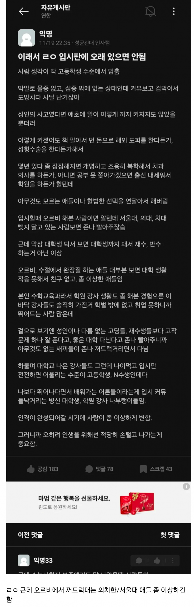

성대생이 말하는 입시판에 오래 있으면 안되는 이유
댓글
성인 사기꾼이였으면, 아침 8시30분에 유럽 비행기안,
11시쯤에 유럽 도착 , 호텔 근처에서 맥주 한잔,자기 기사 확인
예전에 폰지 사기쳤던 청주에 부부 생각남
그 부부 아직도 안잡혔자너
죽지않았다면 해외로 튀었겠지
평균적으로 학벌 좋은 애들이 잘 나가는 건 맞는데,
세상에 너무 많은 다양한 사례들이 있는 걸 모르는듯
그 놈에 학벌주의로 여러 학생들 인생 망쳤을거라고 본다. 본인 선택이겠지만 실제로 학벌좋고 사회적 지위도 가지고 있는 인강강사나 명문대생 말을 무시하기는 어려웠을거라고 봄 학벌이 취업을 절대로 보장해주지 않는다는 걸 아무도 말 안 해주고 매몰비용은 생각도 못하게 함
그래도 인맥 재산등 사실상 세습 계급으로 정해지는 것 보단 낫지
고여 가는 찜질방 할머니 느낌
입시든 뭐든 시험 준비 오래한사람 중에
그 특유의 이상한 기질이 저런거구나
나이먹어도 그 세계에 갇혀서
17-18살에나 관심 가질법한걸로 되새김질하는 것 같은 …
입시 강사가 유독 심해
나이먹어서도 자랑할게 입시성적밖에 없는 인생이면 좀..
정답임. 입시판에 머무르거나 여기에 매몰된 사람들은 현실과 동떨어짐
반대로 매몰된 인간들은 입시의 결과를 인생의 모든 방향을 결정하고 그것으로 가치가 확정되듯 이야기하지
마치 "너는 xx대 나왔으니 딱 그 수준으로 살아야해" "나는 xx대 나왔으니 최소 이정도의 삶이 앞으로 보장되어야만 해" 이런 반응들 말이야
보통 현생에서 선후배 동기들이랑 놀기 바쁘지 ㅋㅋ
그정도 능지 되면 애당초 처음부터 사기를 안치지 ㅋㅋ
정확하게는 알바든 뭐든 '취업을 못하면'이 맞지.
취업을 해야 월급 이직 사내 정치 등등 보통 말하는 사회생활을 하는건데 취업을 안하면 그 부분이 삭제되는거니 그 이전 생활에서만 활동 하게 되는거지
물증이 없다 <- 사법시스템을 너무 개좆으로 아는거 아니냐?
근데 솔직히 어떻게 증명해
그당시 시험칠때 ai를 썼다는걸
당장 시험 못치고 개병신처럼 문제푼다고 그게 입증되는건 아니야
그냥 일일히 대응하지말고 입 닫고 한 1주 ~ 2주만 있었으면 잠잠해 졌을건데
무슨 수능 날 검증을 하네 마네 판은 있는대로 다 키워놓고, 결국 잠수 타버리는 최악의 악수를 둠.
잠잠해질일이 아님. 국가 시스템에 대한 테러행위급이라서.
맞는말임 오히려 과고 조졸하고 카이나 ist 온 애들이 시야가 더 넓은 경우가 많더라
상당히 맞는말임
회생할 기회가 많이 남아있었는데도 왜 저러나 싶었는데... 이런 이유가 있는건가
사회생활 ㅈㄴ 빠르게 하고 구르면 뭐가 다르냐
반대로 20살부터 현장 나가고 일 하는 사람들 중에도 가다가 이상하게 잡힌 애들이 엄청 많은데
입시바닥에 있는게 문제가 아니라
애초 사람이 문제인거
이진우가 수험판이 아니라 다른 판에 관심가졌으면 그 판에서 사기치고 똑같이 행동했을 놈임
사회생활 일찍한다고 좋은건 없긴함. 근데 입시판은 입시라는 좁은 경험만 반복하고 사람이랑 교류하지도 못 하고 하더라도 입시 이야기밖에 못 함. 그래서 오래 있으면 사람이 성장해야할때 성장을 못 함.
위글 쓴 새끼도 좆도모르는게
도피든 성형수술이든 가만히 있든
지금 국가가 작정하고 문 상태에서 그냥 넘어갈 수가 없음
아직도 심증만 있고 물증이 없어서 개기면 처벌안된다는 새끼들 있더라 ㅋㅋ
약간 공감하는게 모든 장수생이 그렇다는 아니지만, 대학이 인생 가치의 전부이고 지도 공부 못하면서 대학 조금 못나온 주변 사람 유명인 진짜 이 악물고 까는 애들 좀 있었음. 그러다 20세 초중반에 자기 가치를 찾고 뭘 잘하는지 자아탐색의 기회도 박탈당한체 수능 5지선다 찾는 훈련만하다가 사고도 단순해지고 악만 남은 20대 후반이 돼서 사회에 떨어지면 진짜로 갑자기 고딩하나 데려다가 이제 30살이니까 취업해 하는 느낌임.
애들 상대하면 애들 수준에서 놀게 됨
가끔 수능 강사들 쇼츠에서 개소리하는거보면 기가 차던데...
이글이랑 침착맨 유튜브중에 인강 강사들 나온거보면 ㅋㅋ..ㅋㅋ